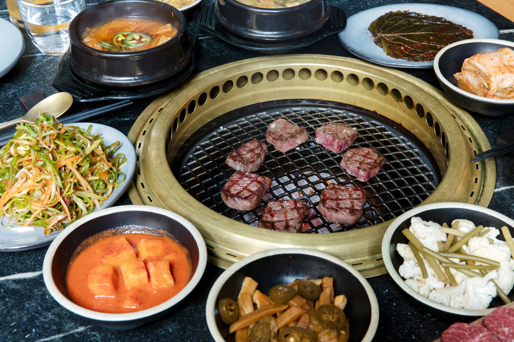
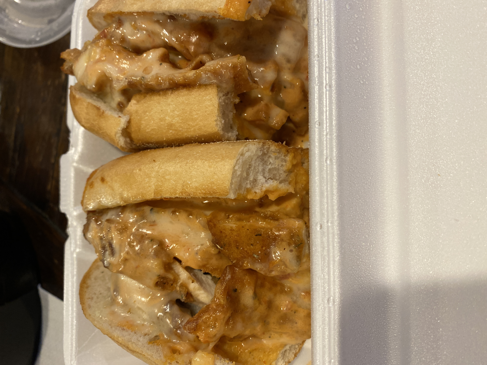
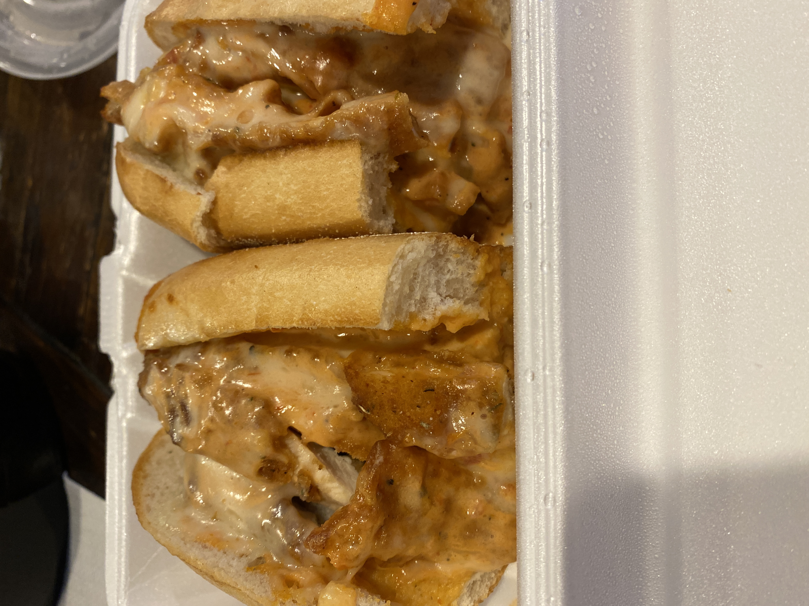
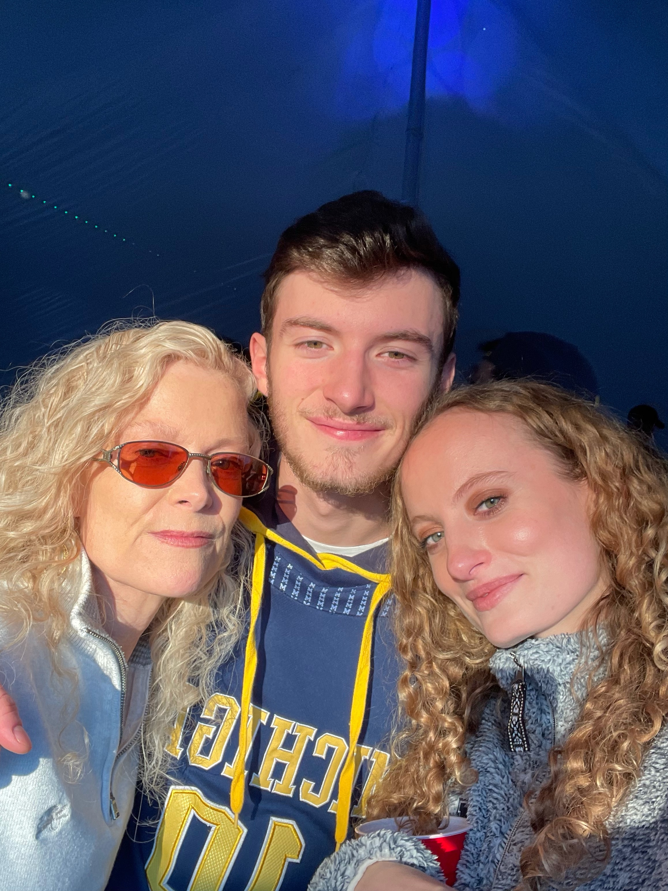
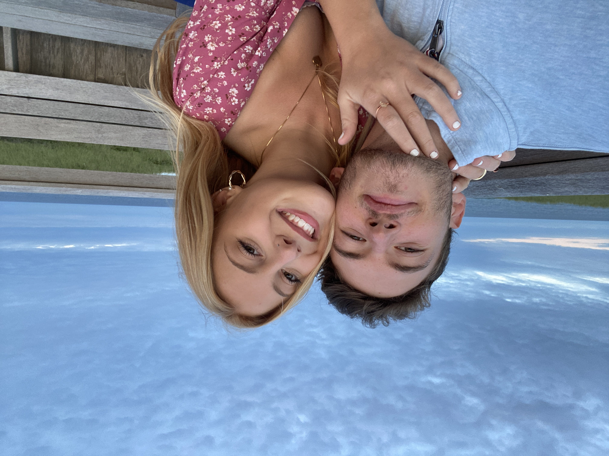
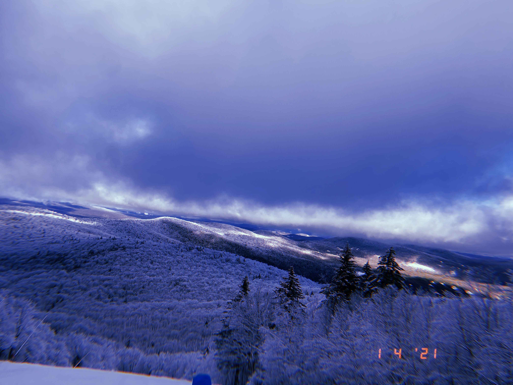
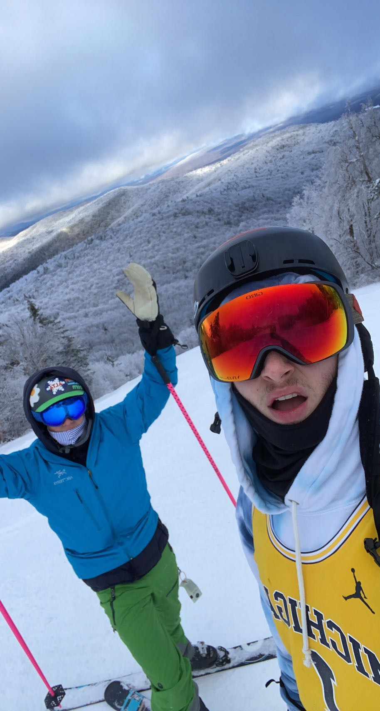
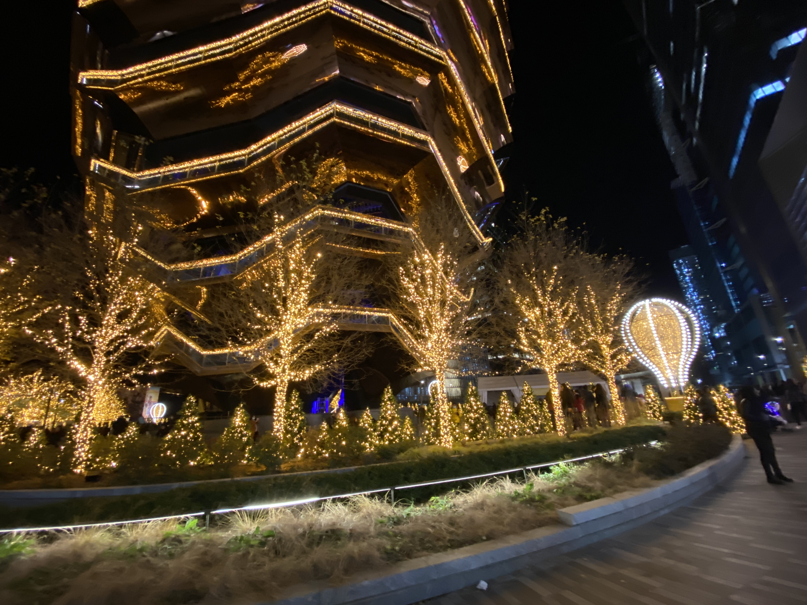
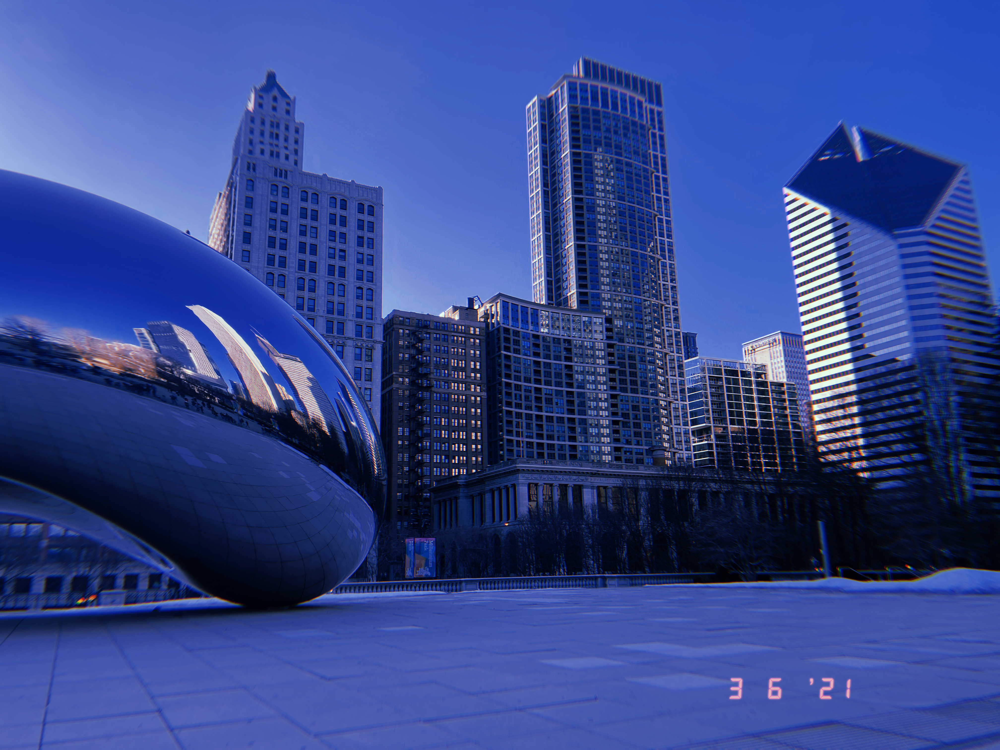

Here is where my real passions come to life. For me, food is one of the most important things in life, second only to family. As someone who cooks personally, I love trying different cuisines to get inspiration and try to cook new dishes myself. One of my favorite aspects of coming to Michigan was the diverse variety of cultural cuisines throughout the City of Ann Arbor. Thanks to my friend Jeremy Kim who was pictured on the last page, I have grown very fond of Korean cusisine, specifically Korean BBQ. Below are some of my favorites.
 

As I said, nothing is more important than family. I was blessed with amazing parents and an incredible older sister. She is 25 and lives in Tampa, Florida while my parents are both 60 years old and are divorced, living in New Jersey and New York respectively. I love my family and always have fun with both my mom and my dad. Below are some pictures with my family from when they visited me at college during the first semester of my sophmore year. Lastly, my girlfiend of two years is pictured as well. Her name is Megan and I am so lucky to have her to support and guide me through life's obstacles.
 Lastly, you cannot forget about fun! I love going on adventures, visiting different cities, and above all, skiing. Last winter I went to hunter mountain with my friend Eli and we enjoyed plentiful amounts of snow. We had an incredible time skiing the slopes together and now make sure to go skiing together at least once every year. On top of that, I visited a couple cities this past year including NYC and Chicago, which I have included pictures of below. I hope these images put into context my more adventurous and fun side :)
   